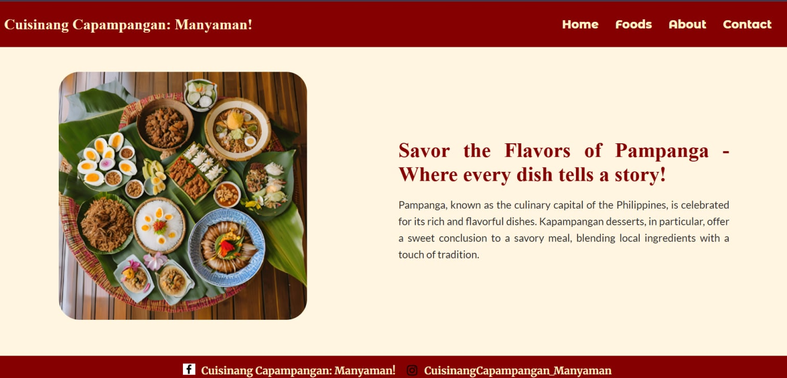

Cuisinang Capampangan: Manyaman!

Project Overview
Cuisinang Capampangan: Manyaman! is a cultural food website that highlights traditional Kapampangan dishes and Pampanga's rich culinary heritage. The website aims to promote local cuisine through recipes, food descriptions, and cultural storytelling.
Project Details
- Type: Cultural Food Website
- Purpose: Showcase traditional Kapampangan dishes and culinary heritage
- Tools Used: HTML, CSS, JavaScript
- Year Created: 2024
Key Features
- Kapampangan recipe showcase
- Cultural food descriptions
- Simple navigation layout
- Food images and ingredients